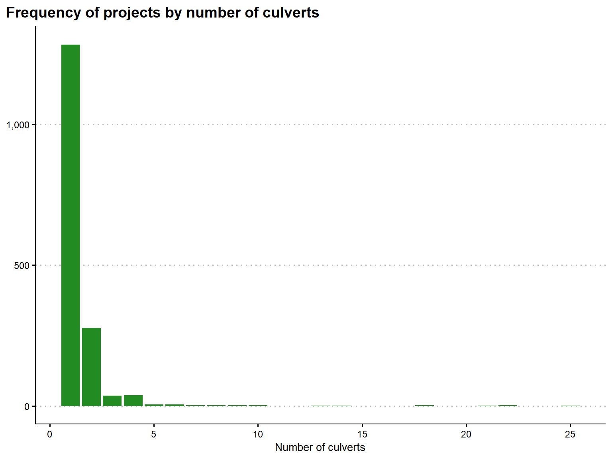
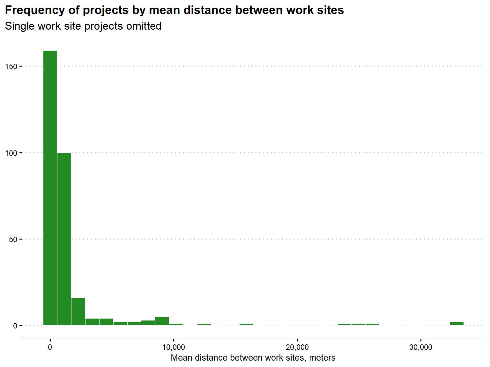
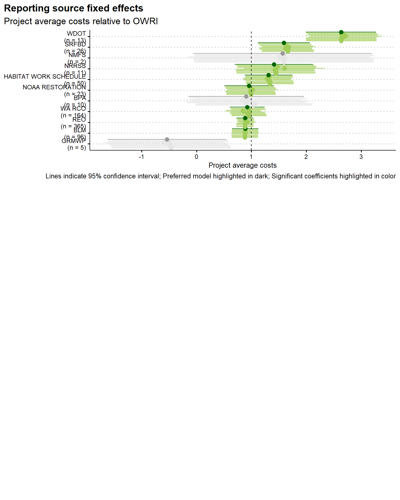

Culvert Cost Pilot Models
B. Van Deynze
April 7, 2020
This report’s goal is to demonstrate how we might model costs for culvert improvement projects. We begin with a description of the currently available data. We then describe a number of pilot regressions demonstrating how these data can be used to model drivers of costs across the region of study. We then discuss proposed next steps, including a list of potential additional variables and example applications.
Data Description
The data used in this analsis are from the Pacific Northwest Salmonid Habitat Project (PNSHP) database. This database, maintained by Katie Barnas at the NOAA Northwest Fisheries Science Center, serves as a clearinghouse for reporting habitat restoration projects targeting salmon in Washington, Oregon, Idaho, and Montana. The data is structured with project as the base observation unit. Each project consists of one or more work site, and each work site consists of one or more restoration action. Costs are provided at the project level (as opposed to the worksite or action level), and the vast majority of work sites are geocoded (i.e. coordiantes are available).
In this analysis, we focus on “pure” culvert projects (i.e. projects where culvert-related actions are the only actions taken at any of the project work sites) between 1996 and 2015 (20 years), with cost reported. There are 1,781 projects that meet this criteria, distributed across 24 basins and reported by 13 different sources. Note that different reporting sources focus on different basins, and that there are clear systemic differences in how costs are reported across sources. For more details, please check the PNSHP Culvert Report.
Some projects in the sample are clearly outliers (See table below). Therefore, we trim projects with costs per culvert less than $2,000 and greater than $750,000, a process that removes 116 projects.
| 0% | 1% | 10% | 25% | 50% | 75% | 90% | 99% | 100% |
|---|---|---|---|---|---|---|---|---|
| $1 | $594 | $4,430 | $11,706 | $44,770 | $106,078 | $199,649 | $911,470 | $2,230,328 |
The PNSHP data is limited in detail but we can recover two key variables that are possible drivers of culvert improvement costs: the number of culverts under a single project and the distance between work sites (measured in meters as the mean Euclidian distance between worksites). Summary statistics for both of these variables are presented in the tables below.
| Variable | Min. | Mean | Median | Max. | Std. dev. |
|---|---|---|---|---|---|
| Distance (mean between worksites), meters | 0.0 | 287.0 | 0.0 | 32,903.8 | 1,811.4 |
| Number of culverts | 1.0 | 1.5 | 1.0 | 25.0 | 1.6 |
| Variable | Min. | Mean | Median | Max. | Std. dev. |
|---|---|---|---|---|---|
| Distance (mean between worksites), meters | 0.0 | 1,493.5 | 465.4 | 32,903.8 | 3,912.6 |
| Number of culverts | 2.0 | 2.8 | 2.0 | 22.0 | 2.2 |
Both variables skew right as expected. The vast majority of projects are single work site projects (1,283 of 1,665), and therefore have no distance between work sites by definition. Also as expected, projects with more culverts have a larger mean distance between work sites, but the correlation is fairly small (Pearson’s correlation = 0.40). Histograms for the number of culverts, mean distance between work sites, and log mean distance between work sites are presented below.

Pilot Regressions
In this section, we present results from initial pilot regressions attempting to model costs per culverts as a function of project characteristics. These models are obviously incomplete, but serve as a first cut we can build on going forward.
In each regression, the dependent variable is log costs per culvert. All estimation is simple ordinary least squares estimated with R’s lm function.
Initial Hypotheses
We consider two initial hypotheses related to the two variables discussed in the data description section.
Our first hypothesis relates to economies of scale. Are per culvert costs lower for projects that modify more culverts? We test this by including the number of culverts linearly or, in an alternative specification, as a series of dummies (two culverts through five or more culverts, with one culvert as the base level).
Our second hypothesis relates to distance. Do projects with work sites that are further apart have higher average costs? We test this by including mean distance in a number of alternative specifications. We include the mean distance variable either lineraly or log transformed. We also include a dummy for single work site projects where the mean distance is always zero. This allows for a discontinuity at zero for the distance effect, disentangling the scale effect from multiple work sites from the effect of distance.
Fixed Effects and Additional Controls
In addition to the variables of interest, we also include fixed effects for year, reporting source, and basin. We also include dummies for whether the project included complete removal of a culvert or installation of an entirely new culvert. For year dummies the base level is 1996, for reporting source the base is OWRI, and for basin the base level is Southern Oregon Coastal.
Preliminary Results
Fixed Effects
| Term | FE-1 | FE-2 | FE-3 | FE-4 | FE-5 | FE-6 | FE-7 |
|---|---|---|---|---|---|---|---|
| Intercept |
9.97*** (0.246) |
9.83*** (0.251) |
9.8*** (0.25) |
9.96*** (0.247) |
9.93*** (0.247) |
9.66*** (0.262) |
9.45*** (0.299) |
| Number of culverts |
-0.148*** (0.0162) |
‒ | ‒ |
-0.145*** (0.0175) |
-0.129*** (0.0179) |
-0.124*** (0.0184) |
-0.128*** (0.0179) |
| Mean distance between work sites | ‒ |
-0.0000571*** (0.000015) |
‒ |
-0.0000078 (0.0000159) |
‒ |
0.00000136 (0.0000161) |
‒ |
| Mean distance between work sites, log | ‒ | ‒ |
-0.0704*** (0.0117) |
‒ |
-0.0305** (0.0128) |
‒ |
0.0422 (0.0286) |
| Single work site (dummy) | ‒ | ‒ | ‒ | ‒ | ‒ |
0.271*** (0.0804) |
0.504*** (0.177) |
| Culvert installation (dummy) |
0.0073 (0.13) |
-0.0483 (0.132) |
-0.0122 (0.132) |
0.00418 (0.13) |
0.0109 (0.13) |
0.025 (0.13) |
0.0343 (0.13) |
| Culvert removal (dummy) |
-0.0725 (0.0762) |
-0.122 (0.0776) |
-0.105 (0.0772) |
-0.0735 (0.0763) |
-0.0712 (0.0761) |
-0.0641 (0.0761) |
-0.059 (0.0761) |
| Project source: BLM |
0.886*** (0.123) |
0.89*** (0.125) |
0.881*** (0.125) |
0.887*** (0.123) |
0.885*** (0.123) |
0.885*** (0.122) |
0.887*** (0.122) |
| Project source: BPA |
0.982* (0.537) |
0.94* (0.548) |
0.839 (0.545) |
0.982* (0.537) |
0.934* (0.536) |
0.905* (0.536) |
0.905* (0.535) |
| Project source: GRMWP |
-0.509 (0.553) |
-0.536 (0.565) |
-0.59 (0.561) |
-0.5 (0.554) |
-0.508 (0.553) |
-0.527 (0.552) |
-0.541 (0.552) |
| Project source: HABITAT WORK SCHEDULE |
1.29*** (0.221) |
1.28*** (0.226) |
1.32*** (0.224) |
1.3*** (0.221) |
1.33*** (0.221) |
1.33*** (0.221) |
1.31*** (0.22) |
| Project source: NMFS |
1.59* (0.831) |
1.51* (0.849) |
1.5* (0.843) |
1.6* (0.831) |
1.6* (0.83) |
1.59* (0.829) |
1.57* (0.828) |
| Project source: NOAA RESTORATION |
0.989*** (0.23) |
1.03*** (0.235) |
0.991*** (0.233) |
0.988*** (0.23) |
0.973*** (0.23) |
0.961*** (0.229) |
0.958*** (0.229) |
| Project source: NRRSS |
1.45*** (0.364) |
1.6*** (0.374) |
1.45*** (0.369) |
1.47*** (0.366) |
1.45*** (0.363) |
1.43*** (0.365) |
1.41*** (0.363) |
| Project source: REO |
0.903*** (0.0787) |
0.926*** (0.0805) |
0.885*** (0.08) |
0.905*** (0.0789) |
0.892*** (0.0787) |
0.885*** (0.0788) |
0.884*** (0.0786) |
| Project source: SRFBD |
1.62*** (0.243) |
1.68*** (0.248) |
1.66*** (0.246) |
1.62*** (0.243) |
1.61*** (0.242) |
1.6*** (0.242) |
1.59*** (0.242) |
| Project source: WA RCO |
0.95*** (0.161) |
0.859*** (0.164) |
0.842*** (0.163) |
0.95*** (0.161) |
0.937*** (0.161) |
0.926*** (0.161) |
0.924*** (0.161) |
| Project source: WDOT |
2.68*** (0.327) |
2.72*** (0.334) |
2.64*** (0.332) |
2.68*** (0.327) |
2.65*** (0.326) |
2.63*** (0.326) |
2.63*** (0.326) |
| Year: 1997 |
-0.501* (0.273) |
-0.539* (0.279) |
-0.41 (0.278) |
-0.5* (0.273) |
-0.445 (0.274) |
-0.438 (0.273) |
-0.46* (0.273) |
| Year: 1998 |
0.0185 (0.26) |
-0.0197 (0.265) |
0.0956 (0.265) |
0.0203 (0.26) |
0.0709 (0.261) |
0.0836 (0.26) |
0.0677 (0.26) |
| Year: 1999 |
0.153 (0.26) |
0.113 (0.266) |
0.219 (0.265) |
0.154 (0.26) |
0.2 (0.261) |
0.209 (0.26) |
0.193 (0.26) |
| Year: 2000 |
0.34 (0.258) |
0.321 (0.263) |
0.431 (0.263) |
0.344 (0.258) |
0.397 (0.259) |
0.41 (0.258) |
0.392 (0.258) |
| Year: 2001 |
0.321 (0.262) |
0.278 (0.267) |
0.394 (0.267) |
0.326 (0.262) |
0.382 (0.262) |
0.395 (0.262) |
0.377 (0.262) |
| Year: 2002 |
0.491* (0.258) |
0.447* (0.263) |
0.565** (0.262) |
0.492* (0.258) |
0.542** (0.258) |
0.548** (0.257) |
0.527** (0.258) |
| Year: 2003 |
0.679*** (0.26) |
0.65** (0.265) |
0.725*** (0.264) |
0.68*** (0.26) |
0.71*** (0.26) |
0.712*** (0.259) |
0.698*** (0.259) |
| Year: 2004 |
1.04*** (0.26) |
1.03*** (0.266) |
1.1*** (0.264) |
1.04*** (0.26) |
1.07*** (0.26) |
1.07*** (0.26) |
1.05*** (0.26) |
| Year: 2005 |
0.759*** (0.26) |
0.737*** (0.265) |
0.807*** (0.264) |
0.76*** (0.26) |
0.791*** (0.26) |
0.789*** (0.259) |
0.771*** (0.259) |
| Year: 2006 |
0.825*** (0.263) |
0.749*** (0.268) |
0.822*** (0.267) |
0.824*** (0.263) |
0.85*** (0.263) |
0.856*** (0.262) |
0.848*** (0.262) |
| Year: 2007 |
0.982*** (0.268) |
0.945*** (0.274) |
1*** (0.272) |
0.982*** (0.268) |
1*** (0.268) |
1.01*** (0.267) |
1*** (0.267) |
| Year: 2008 |
0.512* (0.304) |
0.505 (0.311) |
0.555* (0.309) |
0.513* (0.304) |
0.534* (0.304) |
0.534* (0.303) |
0.522* (0.303) |
| Year: 2009 |
0.619** (0.301) |
0.556* (0.307) |
0.621** (0.305) |
0.618** (0.301) |
0.64** (0.3) |
0.648** (0.3) |
0.644** (0.3) |
| Year: 2010 |
0.765*** (0.292) |
0.518* (0.297) |
0.579* (0.295) |
0.761*** (0.292) |
0.763*** (0.292) |
0.754*** (0.291) |
0.746** (0.291) |
| Year: 2011 |
0.576* (0.303) |
0.505 (0.31) |
0.581* (0.308) |
0.576* (0.303) |
0.606** (0.303) |
0.611** (0.303) |
0.6** (0.302) |
| Year: 2012 |
0.586* (0.327) |
0.558* (0.334) |
0.656** (0.332) |
0.589* (0.327) |
0.633* (0.327) |
0.644** (0.327) |
0.631* (0.327) |
| Year: 2013 |
0.33 (0.3) |
0.296 (0.306) |
0.355 (0.305) |
0.331 (0.3) |
0.356 (0.3) |
0.355 (0.299) |
0.341 (0.299) |
| Year: 2014 |
0.495 (0.318) |
0.478 (0.325) |
0.49 (0.323) |
0.498 (0.318) |
0.509 (0.318) |
0.493 (0.317) |
0.473 (0.317) |
| Year: 2015 |
1.11*** (0.41) |
0.974** (0.425) |
0.75* (0.413) |
1.15*** (0.417) |
1.11*** (0.409) |
1.08*** (0.416) |
1.06*** (0.409) |
| Basin: CLEARWATER |
0.131 (0.744) |
-0.00986 (0.759) |
0.33 (0.756) |
0.125 (0.744) |
0.254 (0.745) |
0.344 (0.744) |
0.355 (0.744) |
| Basin: DESCHUTES |
0.278 (0.218) |
0.319 (0.223) |
0.29 (0.221) |
0.278 (0.218) |
0.269 (0.218) |
0.261 (0.218) |
0.259 (0.217) |
| Basin: JOHN DAY |
-0.197 (0.186) |
-0.171 (0.19) |
-0.139 (0.189) |
-0.197 (0.187) |
-0.181 (0.186) |
-0.175 (0.186) |
-0.179 (0.186) |
| Basin: KLAMATH |
0.00602 (0.378) |
0.000107 (0.386) |
0.054 (0.383) |
0.00724 (0.378) |
0.0323 (0.377) |
0.0327 (0.377) |
0.0197 (0.376) |
| Basin: KOOTENAI |
-0.755 (0.807) |
-0.886 (0.825) |
-0.811 (0.819) |
-0.777 (0.809) |
-0.788 (0.806) |
-0.779 (0.806) |
-0.76 (0.805) |
| Basin: LOWER COLUMBIA |
0.0201 (0.129) |
0.00761 (0.132) |
-0.00201 (0.131) |
0.0219 (0.13) |
0.0198 (0.129) |
0.0183 (0.129) |
0.0176 (0.129) |
| Basin: LOWER SNAKE |
0.876*** (0.316) |
0.967*** (0.323) |
1*** (0.321) |
0.88*** (0.317) |
0.909*** (0.316) |
0.91*** (0.316) |
0.895*** (0.316) |
| Basin: MIDDLE COLUMBIA |
-0.338 (0.25) |
-0.445* (0.255) |
-0.402 (0.253) |
-0.341 (0.25) |
-0.335 (0.25) |
-0.318 (0.249) |
-0.307 (0.249) |
| Basin: MIDDLE SNAKE-BOISE |
-0.0011 (0.465) |
0.0366 (0.474) |
0.0377 (0.471) |
-0.00062 (0.465) |
0.00315 (0.464) |
0.0049 (0.463) |
0.00433 (0.463) |
| Basin: MIDDLE SNAKE-POWDER |
-1.33 (1.02) |
-1.29 (1.05) |
-1.34 (1.04) |
-1.33 (1.03) |
-1.35 (1.02) |
-1.36 (1.02) |
-1.37 (1.02) |
| Basin: NORTHERN CALIFORNIA COASTAL |
-1.31 (1.03) |
-1.3 (1.05) |
-1.34 (1.04) |
-1.31 (1.03) |
-1.34 (1.02) |
-1.35 (1.02) |
-1.35 (1.02) |
| Basin: NORTHERN OREGON COASTAL |
-0.397*** (0.0837) |
-0.448*** (0.0856) |
-0.314*** (0.0893) |
-0.393*** (0.0841) |
-0.332*** (0.0879) |
-0.302*** (0.0881) |
-0.31*** (0.0881) |
| Basin: OREGON CLOSED BASINS |
0.762** (0.302) |
0.774** (0.308) |
0.774** (0.306) |
0.761** (0.302) |
0.76** (0.301) |
0.761** (0.301) |
0.762** (0.301) |
| Basin: PEND OREILLE |
-0.546 (0.355) |
-0.545 (0.362) |
-0.556 (0.36) |
-0.548 (0.355) |
-0.557 (0.354) |
-0.559 (0.354) |
-0.556 (0.353) |
| Basin: PUGET SOUND |
0.0467 (0.164) |
0.0733 (0.168) |
0.0644 (0.167) |
0.0464 (0.164) |
0.0439 (0.164) |
0.0424 (0.164) |
0.0424 (0.164) |
| Basin: SALMON |
-0.876 (0.782) |
-0.9 (0.799) |
-0.647 (0.793) |
-0.89 (0.782) |
-0.806 (0.781) |
-0.777 (0.78) |
-0.793 (0.779) |
| Basin: SPOKANE |
0.339 (0.463) |
0.435 (0.473) |
0.377 (0.47) |
0.335 (0.464) |
0.31 (0.463) |
0.303 (0.462) |
0.311 (0.462) |
| Basin: UPPER COLUMBIA |
-0.313 (0.196) |
-0.333* (0.2) |
-0.323 (0.199) |
-0.314 (0.196) |
-0.314 (0.196) |
-0.312 (0.196) |
-0.31 (0.195) |
| Basin: UPPER SACRAMENTO |
0.056 (0.518) |
0.126 (0.529) |
0.215 (0.526) |
0.0589 (0.519) |
0.107 (0.518) |
0.188 (0.518) |
0.231 (0.519) |
| Basin: WASHINGTON COASTAL |
-0.0767 (0.171) |
-0.113 (0.175) |
-0.128 (0.174) |
-0.0798 (0.172) |
-0.0941 (0.171) |
-0.0987 (0.171) |
-0.0946 (0.171) |
| Basin: WILLAMETTE |
-0.227*** (0.0757) |
-0.228*** (0.0773) |
-0.247*** (0.0768) |
-0.227*** (0.0757) |
-0.234*** (0.0756) |
-0.23*** (0.0755) |
-0.224*** (0.0755) |
| Adj. R2 | 0.382 | 0.356 | 0.364 | 0.382 | 0.384 | 0.386 | 0.387 |
| AIC | 4827.2 | 4896.5 | 4874.4 | 4828.9 | 4823.3 | 4819.2 | 4816.9 |
| BIC | 5130.4 | 5199.7 | 5177.6 | 5137.5 | 5131.9 | 5133.2 | 5131 |
| N | 1659 | 1659 | 1659 | 1659 | 1659 | 1659 | 1659 |
| * p < 0.1, ** p < 0.05, *** p < 0.01 |
No Fixed Effects
| Term | NOFE-1 | NOFE-2 | NOFE-3 | NOFE-4 | NOFE-5 | NOFE-6 | NOFE-7 |
|---|---|---|---|---|---|---|---|
| Intercept |
10.8*** (0.0418) |
10.6*** (0.032) |
10.8*** (0.0336) |
10.8*** (0.0423) |
10.9*** (0.0409) |
10*** (0.0896) |
9.85*** (0.209) |
| Number of culverts |
-0.155*** (0.0191) |
‒ | ‒ |
-0.145*** (0.0208) |
-0.0775*** (0.0206) |
-0.0787*** (0.0212) |
-0.0769*** (0.0205) |
| Mean distance between work sites | ‒ |
-0.0000743*** (0.0000174) |
‒ |
-0.0000228 (0.0000187) |
‒ |
0.0000143 (0.0000186) |
‒ |
| Mean distance between work sites, log | ‒ | ‒ |
-0.142*** (0.0124) |
‒ |
-0.12*** (0.0136) |
‒ |
0.0325 (0.034) |
| Single work site (dummy) | ‒ | ‒ | ‒ | ‒ | ‒ |
0.857*** (0.0854) |
1.03*** (0.21) |
| Adj. R2 | 0.0373 | 0.0102 | 0.0725 | 0.0376 | 0.0798 | 0.0921 | 0.0923 |
| AIC | 5528.9 | 5575.2 | 5466.9 | 5529.4 | 5454.8 | 5433.3 | 5433 |
| BIC | 5545.1 | 5591.4 | 5483.2 | 5551.1 | 5476.5 | 5460.4 | 5460.1 |
| N | 1664 | 1664 | 1664 | 1664 | 1664 | 1664 | 1664 |
| * p < 0.1, ** p < 0.05, *** p < 0.01 |
Number of Culverts Binned
| Term | BIN-1 | BIN-2 | BIN-3 | BIN-4 | BIN-5 |
|---|---|---|---|---|---|
| Intercept |
9.81*** (0.247) |
9.81*** (0.247) |
9.81*** (0.247) |
9.64*** (0.301) |
9.36*** (0.341) |
| Number of culverts: 2 |
-0.306*** (0.0762) |
-0.302*** (0.0769) |
-0.345*** (0.12) |
-0.164 (0.161) |
-0.143 (0.16) |
| Number of culverts: 3 |
-0.618*** (0.174) |
-0.606*** (0.177) |
-0.665*** (0.207) |
-0.47** (0.225) |
-0.493** (0.225) |
| Number of culverts: 4 |
-0.841*** (0.175) |
-0.836*** (0.176) |
-0.886*** (0.204) |
-0.688*** (0.233) |
-0.672*** (0.232) |
| Number of culverts: 5 or more |
-1.32*** (0.196) |
-1.29*** (0.214) |
-1.38*** (0.231) |
-1.18*** (0.242) |
-1.27*** (0.238) |
| Mean distance between work sites | ‒ |
-0.00000627 (0.0000164) |
‒ |
-0.00000321 (0.0000167) |
‒ |
| Mean distance between work sites, log | ‒ | ‒ |
0.00881 (0.0206) |
‒ |
0.049* (0.0294) |
| Single work site (dummy) | ‒ | ‒ | ‒ |
0.167 (0.172) |
0.461* (0.241) |
| Culvert installation (dummy) |
0.049 (0.13) |
0.0463 (0.131) |
0.0541 (0.131) |
0.0366 (0.131) |
0.0467 (0.131) |
| Culvert removal (dummy) |
-0.0492 (0.0769) |
-0.0499 (0.0769) |
-0.0469 (0.0771) |
-0.0538 (0.077) |
-0.0484 (0.077) |
| Project source: BLM |
0.881*** (0.123) |
0.882*** (0.123) |
0.881*** (0.123) |
0.881*** (0.123) |
0.882*** (0.123) |
| Project source: BPA |
1.04* (0.54) |
1.04* (0.541) |
1.07* (0.546) |
0.916* (0.555) |
0.89 (0.554) |
| Project source: GRMWP |
-0.465 (0.555) |
-0.456 (0.556) |
-0.465 (0.556) |
-0.471 (0.556) |
-0.496 (0.555) |
| Project source: HABITAT WORK SCHEDULE |
1.33*** (0.221) |
1.34*** (0.222) |
1.33*** (0.222) |
1.34*** (0.222) |
1.32*** (0.222) |
| Project source: NMFS |
1.59* (0.835) |
1.6* (0.835) |
1.59* (0.835) |
1.59* (0.835) |
1.58* (0.834) |
| Project source: NOAA RESTORATION |
0.994*** (0.23) |
0.993*** (0.23) |
0.997*** (0.23) |
0.98*** (0.231) |
0.975*** (0.23) |
| Project source: NRRSS |
1.44*** (0.365) |
1.45*** (0.368) |
1.44*** (0.365) |
1.45*** (0.368) |
1.42*** (0.365) |
| Project source: REO |
0.881*** (0.0791) |
0.883*** (0.0792) |
0.882*** (0.0791) |
0.882*** (0.0792) |
0.88*** (0.079) |
| Project source: SRFBD |
1.66*** (0.243) |
1.66*** (0.243) |
1.67*** (0.244) |
1.63*** (0.245) |
1.62*** (0.245) |
| Project source: WA RCO |
0.955*** (0.162) |
0.954*** (0.162) |
0.962*** (0.163) |
0.929*** (0.164) |
0.925*** (0.164) |
| Project source: WDOT |
2.64*** (0.327) |
2.64*** (0.328) |
2.64*** (0.328) |
2.63*** (0.328) |
2.63*** (0.327) |
| Year: 1997 |
-0.447 (0.274) |
-0.447 (0.274) |
-0.454* (0.275) |
-0.44 (0.274) |
-0.466* (0.274) |
| Year: 1998 |
0.086 (0.261) |
0.0868 (0.261) |
0.0804 (0.261) |
0.0935 (0.261) |
0.0745 (0.261) |
| Year: 1999 |
0.211 (0.261) |
0.211 (0.261) |
0.207 (0.262) |
0.212 (0.261) |
0.192 (0.261) |
| Year: 2000 |
0.402 (0.259) |
0.405 (0.259) |
0.395 (0.259) |
0.415 (0.259) |
0.394 (0.259) |
| Year: 2001 |
0.402 (0.263) |
0.404 (0.263) |
0.395 (0.263) |
0.412 (0.263) |
0.391 (0.263) |
| Year: 2002 |
0.544** (0.258) |
0.544** (0.259) |
0.538** (0.259) |
0.549** (0.259) |
0.524** (0.259) |
| Year: 2003 |
0.716*** (0.26) |
0.716*** (0.26) |
0.712*** (0.26) |
0.72*** (0.26) |
0.704*** (0.26) |
| Year: 2004 |
1.06*** (0.261) |
1.06*** (0.261) |
1.06*** (0.261) |
1.07*** (0.261) |
1.05*** (0.261) |
| Year: 2005 |
0.784*** (0.26) |
0.785*** (0.26) |
0.778*** (0.26) |
0.792*** (0.26) |
0.772*** (0.26) |
| Year: 2006 |
0.851*** (0.263) |
0.85*** (0.263) |
0.848*** (0.264) |
0.855*** (0.263) |
0.847*** (0.263) |
| Year: 2007 |
0.993*** (0.268) |
0.993*** (0.269) |
0.991*** (0.269) |
0.997*** (0.269) |
0.989*** (0.268) |
| Year: 2008 |
0.559* (0.305) |
0.559* (0.305) |
0.558* (0.305) |
0.555* (0.305) |
0.541* (0.305) |
| Year: 2009 |
0.684** (0.302) |
0.681** (0.302) |
0.685** (0.302) |
0.676** (0.302) |
0.674** (0.301) |
| Year: 2010 |
0.684** (0.292) |
0.681** (0.292) |
0.685** (0.292) |
0.675** (0.292) |
0.665** (0.292) |
| Year: 2011 |
0.665** (0.304) |
0.664** (0.304) |
0.664** (0.304) |
0.661** (0.304) |
0.65** (0.304) |
| Year: 2012 |
0.655** (0.328) |
0.657** (0.328) |
0.652** (0.329) |
0.655** (0.328) |
0.636* (0.328) |
| Year: 2013 |
0.374 (0.301) |
0.374 (0.301) |
0.371 (0.301) |
0.372 (0.301) |
0.354 (0.301) |
| Year: 2014 |
0.506 (0.319) |
0.508 (0.319) |
0.504 (0.319) |
0.497 (0.319) |
0.472 (0.319) |
| Year: 2015 |
0.898** (0.408) |
0.93** (0.417) |
0.898** (0.409) |
0.897** (0.419) |
0.852** (0.409) |
| Basin: CLEARWATER |
0.523 (0.752) |
0.514 (0.753) |
0.491 (0.756) |
0.646 (0.765) |
0.701 (0.763) |
| Basin: DESCHUTES |
0.267 (0.219) |
0.267 (0.219) |
0.266 (0.219) |
0.269 (0.219) |
0.267 (0.219) |
| Basin: JOHN DAY |
-0.199 (0.187) |
-0.199 (0.187) |
-0.202 (0.187) |
-0.19 (0.187) |
-0.195 (0.187) |
| Basin: KLAMATH |
0.0479 (0.379) |
0.0494 (0.379) |
0.0426 (0.379) |
0.0562 (0.379) |
0.039 (0.379) |
| Basin: KOOTENAI |
-0.786 (0.809) |
-0.802 (0.81) |
-0.78 (0.809) |
-0.801 (0.81) |
-0.771 (0.808) |
| Basin: LOWER COLUMBIA |
0.0259 (0.13) |
0.027 (0.13) |
0.0262 (0.13) |
0.0253 (0.13) |
0.0247 (0.13) |
| Basin: LOWER SNAKE |
0.889*** (0.317) |
0.892*** (0.317) |
0.882*** (0.317) |
0.902*** (0.317) |
0.881*** (0.317) |
| Basin: MIDDLE COLUMBIA |
-0.426* (0.25) |
-0.427* (0.25) |
-0.43* (0.251) |
-0.406 (0.251) |
-0.39 (0.251) |
| Basin: MIDDLE SNAKE-BOISE |
0.0182 (0.465) |
0.0186 (0.465) |
0.0181 (0.465) |
0.018 (0.466) |
0.0163 (0.465) |
| Basin: MIDDLE SNAKE-POWDER |
-1.37 (1.03) |
-1.37 (1.03) |
-1.37 (1.03) |
-1.37 (1.03) |
-1.38 (1.03) |
| Basin: NORTHERN CALIFORNIA COASTAL |
-1.36 (1.03) |
-1.36 (1.03) |
-1.35 (1.03) |
-1.37 (1.03) |
-1.36 (1.03) |
| Basin: NORTHERN OREGON COASTAL |
-0.331*** (0.0878) |
-0.328*** (0.0881) |
-0.337*** (0.0888) |
-0.318*** (0.0887) |
-0.33*** (0.0888) |
| Basin: OREGON CLOSED BASINS |
0.762** (0.302) |
0.762** (0.302) |
0.763** (0.302) |
0.761** (0.302) |
0.763** (0.302) |
| Basin: PEND OREILLE |
-0.551 (0.355) |
-0.554 (0.356) |
-0.552 (0.355) |
-0.545 (0.356) |
-0.535 (0.355) |
| Basin: PUGET SOUND |
0.0399 (0.164) |
0.04 (0.165) |
0.0401 (0.165) |
0.0384 (0.165) |
0.0372 (0.164) |
| Basin: SALMON |
-0.678 (0.784) |
-0.692 (0.785) |
-0.682 (0.785) |
-0.674 (0.786) |
-0.674 (0.784) |
| Basin: SPOKANE |
0.272 (0.464) |
0.271 (0.465) |
0.271 (0.465) |
0.278 (0.465) |
0.285 (0.464) |
| Basin: UPPER COLUMBIA |
-0.296 (0.196) |
-0.297 (0.197) |
-0.293 (0.197) |
-0.306 (0.197) |
-0.304 (0.197) |
| Basin: UPPER SACRAMENTO |
0.178 (0.52) |
0.18 (0.521) |
0.182 (0.521) |
0.196 (0.521) |
0.244 (0.521) |
| Basin: WASHINGTON COASTAL |
-0.11 (0.172) |
-0.112 (0.172) |
-0.107 (0.172) |
-0.118 (0.172) |
-0.113 (0.172) |
| Basin: WILLAMETTE |
-0.236*** (0.0758) |
-0.236*** (0.0759) |
-0.235*** (0.0759) |
-0.237*** (0.0759) |
-0.231*** (0.0759) |
| Adj. R2 | 0.38 | 0.38 | 0.38 | 0.38 | 0.381 |
| AIC | 4834.7 | 4836.5 | 4836.5 | 4837.6 | 4834.7 |
| BIC | 5154.1 | 5161.4 | 5161.4 | 5167.8 | 5165 |
| N | 1659 | 1659 | 1659 | 1659 | 1659 |
| * p < 0.1, ** p < 0.05, *** p < 0.01 |
Preferred Model Interpretation
Preferred model interpretation (n_culverts, log dist_mean, worksite dummy, with fixed effects) Our preferred model is FE-7, the specification with linear numer of culverts, log mean distance with a dummy for single work site projects, and the full suite of fixed effects. This model has the highest adjusted R2 (0.387) and lowest AIC (4816.9). Its fit is marginally better than alternatives, though the results described below largely hold across models. Below are fitted value vs. residuals plots and a Q-Q plot of the residuals for the preferred model.

Color indicates funding source.
Evidence of economies of scale
The preferred model suggests that for every additional culvert under a project, project average costs fall 12.1% on average. This result is consistent across alternative specifications. Falling average costs as the number of culverts increases is consistent with the hypothesis of economies of scale. Presumably, economies of scale fall at some point, though the binned models suggest that this inflection point is somewhere beyond five culverts and outside the range of the observed data.
Little support for distance hypothesis
We find some weak support for the distance hypothesis. In the preferred model, the log mean distance betweeen work sites coefficient is positive, but statistically insignificant at the 10% level. For a 10% increase in the distance between work sites, project average costs increase only 0.4%. (Note that in model BIN-5, the coefficient is statistically significant at the 10% level and in this model, a 10% increase in distance is associated with a 0.5%.)
In models where mean distance between work sites is included without number of culverts, the coefficients are negative and statistically significant, and this effect persists for log mean distance specifications. This is likely due to collinearity (and ommited variable bias) between the number of culverts and the mean distance between work sites, which confounds scale effects of increasing the number of culverts and worksites with the distance effect of when worksites are further away. This effect is likely especially pronounced when projects increase from one culvert and one work site (and therefore zero distance between work sites by definition) to multiple work sites. Including the single work site dummy alleviates this effect.
Results Figures
We can compare fixed effects to identify trends in project average costs over time, differences in levels between basins or reporting sources. To do so, we plot the exponentiated coefficients for each model with fixed effects (FE and BIN models), which gives the ratio of the expected average costs for projects in a given category (i.e. year or basin) relative to the base category (i.e. 1996 or Southern Oregon Coastal), conditional on the other covariates.
Year Fixed Effects

Observation: Average costs were higher between 2002 and 2007 before falling to a lower level between 2008 and 2011. Average costs fell to pre-2002 levels in 2013 before spiking again to early 2000s levels in 2015.
Source Fixed Effects
 Source glossery
Observation: WSDOT reports unusually high average costs. Projects reported by OWRI (the base level) have average costs that are relatively low. These effects swamp basin effects observed in the next figure.
Basin Fixed Effects

Observation: Average costs are unsually high in the Lower Snake and Oregon Closed basins. Projects in the Willamette and Northern Oregon Coastal basins have average costs that are significatnly lower than projects in the Southern Oregon Coastal basin.
Effect Size by Number of Culverts

Observation: Average costs are lower for projects that deal with more culverts, suggesting economies of scale. This result is consistent with evidence from the preferred model.
Next Steps
In this section, we brainstorm potential variables that we may be able to layer upon the existing models to improve predictive power and utility or test additional hypotheses. We then also brainstorm potential applications for future models.
Potential Additional Variables
Road Variables
Examples: Road width at culvert, road classification (i.e. four-lane highway, two-land highway, etc.), average monthly traffic, years since maintenance
Potential Sources: OpenStreetMaps road data, others (?)
Technical Barriers: Developing efficient algorithm for identifying and measuring nearest road, possibility that ArcGIS has superior methods
Other Notes: These variables will be tough to get, but it should be possible. Work site coordinates are likely not exactly on the roads due to accuracy, so identifying the nearest road instead of the exact overlap will likely be necessary. OpenStreetData is the only database I’ve checked so far, but there are likely other more detailed road inventories available. Culverts on smaller roads will require more detailed road data, which is even more computationally demanding.
Stream Variables
Examples: Stream width at culvert, flow at culvert, depth at culvert
Potential Sources: OpenStreetMaps stream data, nearest observation stations along streams if available, others (?)
Technical Barriers: Developing efficient algorithm for identifying nearest stream or observation station, possibility that ArcGIS has superior methods
Other Notes: These variables are likely even harder to generate than the road ones. All of the same caveats apply, but exact stream characteristics vary a lot year-to-year, so tracking down reliable data might be difficult.
Geo-spatial Variables
Examples: Number of other work sites in r radius in past y years, spatial auto-correlation methods (Moran’s I, Cliff-Ord type models), distance to nearest population center
Potential Sources: Already possible with existing coordinates
Technical Barriers: Developing efficient algorithm for counting other projects in radius over time and space, identifying appropriate econometric techniques
Other Notes: Building in these sorts of methods might be computationally taxing but is surely possible in the near-term. The value of adding these sorts of methods will increase once other co-variates are added.
Socio-economic Variables
Examples: Population density in county, distribution of jobs across sectors in county, unemployment in county, median income in county
Potential Sources: US Census Bureau, others (?)
Technical Barriers: Accessing Census Bureau API, identifying time series with appropriate temporal/geographic resolution, identifying county by coordinates
Other Notes: This seems to be the low-hanging fruit. Work on this can start immediately.
Example Applications
Predicting Costs for Future Culvert Projects
Using data from state culvert inventories, we may be able to use these models to develop cost predictions for future culvert projects. These predictions can be integrated into prioritization methods used by state and local agencies. Maps and examples with different prioritization algorithms (e.g. with or without accounting for costs) can demonstrate value of including cost modeling in restoration planning.
Quantity vs. Expenditure Plots
With a sufficiently accurate model and a optimization algorithm, we could estimate the minimum expenditures on culvert projects that would be necessary to achieve a given level of additional stream access. We could further prioritize different streams by habitat quality and ECU population ranges to demonstrate cost-conservation target trade-offs. We could also demonstrate the effects of distributing funding uniformly over municipalities versus in a more targeted fashion.
Other Extensions
The PNSHP database includes projects for other restoration actions. Models like these may be extendable to some other actions. Specifically, actions like the installation of in-stream large woody debris and other discrete riparian actions seem to be prime candidates to extend these methods to in parallel models.
Appendix: Source Glossary
Thirty-eight different organizations, referred to as sources, contribute data to PNSHP. Below you will find a glossary of each source code.
ASOTIN - Asotin County Conservation District (Asotin County is the southeastern-most county in Washington and contains important Snake River watersheds)
BLM - Bureau of Land Management
BOR - Bureau of Reclamation (Department of the Interior agency responsible for water storage and irrigation, including federal dams)
BPA - Bonneville Power Administration
CBFWA - Columbia Basin Fish and Wildlife Authority (Now defunct group of state, federal, and tribal agencies organized to advise BPA on habitat improvement efforts)
CHEHALIS - Chehalis Tribe (Southwestern Washington)
COLVILLE - Colville Tribe (Northeastern Washington)
COQUILLE - Coquille Tribe (Southwestern Oregon)
COWLITZ - Cowlitz Tribe (Northeastern Washington)
CRITFC - Columbia River Inter-Tribal Fisheries Commission
DUCKS UNLIMITED - Ducks Unlimited
FISHER FISHERIES - Fisher Fisheries Consultancy
GRAND RONDE - Grand Ronde Tribe (Central Western Oregon)
GRMWP - Grande Ronde Model Watershed Program (Northeastern Oregon river)
HABITAT WORK SCHEDULE - Washington State program for tracking projects by the 27 “Lead Entities”, local boards responsible for managing state salmon habitat spending
ID OSC - Idaho Office of Species Conservation
IDAHODEQ - Idaho Department of Environmental Quality
IDFG - Idaho Department of Fish and Game
IDFG SCREEN SHOP - Fish screen efforts for IDFG
KRITFWC - Klamath River Inter-Tribal Fish and Water Commission (Southern Oregon river)
MONTANA WATER CENTER - Research institute based at Montana State
NMFS - NOAA Fisheries
NOAA RESTORATION - NOAA Restoration Center
NRRSS - National River Restoration Science Synthesis project (a project of American Rivers)
NWIFC - Northwest Indian Fisheries Commission
OR WATER TRUST - Oregon Water Trust
OWRI - Oregon Watershed Restoration Inventory
PCSRF - Pacific Coastal Salmon Recovery Fund (federal grant program administered by NOAA)
REO - United States Forest Service Region 6 Regional Ecosystem Office
SHOSHONE-BANNOCK - Shoshone-Bannock Tribes (Southeastern Idaho)
SRFBD - Salmon Funding Recovery Board Database (Washington State Recreation and Conservation Office grant program)
STREAMNET - Data project of the Pacific States Marine Fisheries Commission
WA DOE - Washington State Department of Ecology
WA RCO - Washington State Recreation and Conservation Office
WA WATER TRUST - Washington Water Trust
WDFW FISHWAY - Washington State Department of Fish and Wildlife (WDFW) Fishway Program
WDFW WRIP - WDFW Watershed Recovery Inventory Project
WDOT - Washington Department of Transportation
End Matter
[1] "2020-10-26 10:45:19 PDT"R version 4.0.2 (2020-06-22)
Platform: x86_64-w64-mingw32/x64 (64-bit)
Running under: Windows 10 x64 (build 19041)
Matrix products: default
locale:
[1] LC_COLLATE=English_United States.1252
[2] LC_CTYPE=English_United States.1252
[3] LC_MONETARY=English_United States.1252
[4] LC_NUMERIC=C
[5] LC_TIME=English_United States.1252
attached base packages:
[1] grid stats graphics grDevices utils datasets methods
[8] base
other attached packages:
[1] here_0.1 broom_0.7.0 kableExtra_1.1.0 knitr_1.29
[5] scales_1.1.1 ggfortify_0.4.10 ggthemes_4.2.0 janitor_2.0.1
[9] forcats_0.5.0 stringr_1.4.0 dplyr_1.0.1 purrr_0.3.4
[13] readr_1.3.1 tidyr_1.1.1 tibble_3.0.4 ggplot2_3.3.2
[17] tidyverse_1.3.0
loaded via a namespace (and not attached):
[1] Rcpp_1.0.5 lubridate_1.7.9 ps_1.3.3 assertthat_0.2.1
[5] rprojroot_1.3-2 digest_0.6.25 R6_2.4.1 cellranger_1.1.0
[9] backports_1.1.8 reprex_0.3.0 evaluate_0.14 highr_0.8
[13] httr_1.4.2 pillar_1.4.6 rlang_0.4.8 readxl_1.3.1
[17] rstudioapi_0.11 blob_1.2.1 rmarkdown_2.3 labeling_0.3
[21] webshot_0.5.2 munsell_0.5.0 compiler_4.0.2 httpuv_1.5.4
[25] modelr_0.1.8 xfun_0.16 pkgconfig_2.0.3 htmltools_0.5.0
[29] tidyselect_1.1.0 gridExtra_2.3 workflowr_1.6.2 viridisLite_0.3.0
[33] fansi_0.4.1 crayon_1.3.4 dbplyr_1.4.4 withr_2.2.0
[37] later_1.1.0.1 jsonlite_1.7.1 gtable_0.3.0 lifecycle_0.2.0
[41] DBI_1.1.0 git2r_0.27.1 magrittr_1.5 cli_2.1.0
[45] stringi_1.4.6 farver_2.0.3 fs_1.4.2 promises_1.1.1
[49] snakecase_0.11.0 xml2_1.3.2 ellipsis_0.3.1 generics_0.0.2
[53] vctrs_0.3.4 tools_4.0.2 glue_1.4.2 hms_0.5.3
[57] yaml_2.2.1 colorspace_1.4-1 rvest_0.3.6 haven_2.3.1
R version 4.0.2 (2020-06-22)
Platform: x86_64-w64-mingw32/x64 (64-bit)
Running under: Windows 10 x64 (build 19041)
Matrix products: default
locale:
[1] LC_COLLATE=English_United States.1252
[2] LC_CTYPE=English_United States.1252
[3] LC_MONETARY=English_United States.1252
[4] LC_NUMERIC=C
[5] LC_TIME=English_United States.1252
attached base packages:
[1] grid stats graphics grDevices utils datasets methods
[8] base
other attached packages:
[1] here_0.1 broom_0.7.0 kableExtra_1.1.0 knitr_1.29
[5] scales_1.1.1 ggfortify_0.4.10 ggthemes_4.2.0 janitor_2.0.1
[9] forcats_0.5.0 stringr_1.4.0 dplyr_1.0.1 purrr_0.3.4
[13] readr_1.3.1 tidyr_1.1.1 tibble_3.0.4 ggplot2_3.3.2
[17] tidyverse_1.3.0
loaded via a namespace (and not attached):
[1] Rcpp_1.0.5 lubridate_1.7.9 ps_1.3.3 assertthat_0.2.1
[5] rprojroot_1.3-2 digest_0.6.25 R6_2.4.1 cellranger_1.1.0
[9] backports_1.1.8 reprex_0.3.0 evaluate_0.14 highr_0.8
[13] httr_1.4.2 pillar_1.4.6 rlang_0.4.8 readxl_1.3.1
[17] rstudioapi_0.11 blob_1.2.1 rmarkdown_2.3 labeling_0.3
[21] webshot_0.5.2 munsell_0.5.0 compiler_4.0.2 httpuv_1.5.4
[25] modelr_0.1.8 xfun_0.16 pkgconfig_2.0.3 htmltools_0.5.0
[29] tidyselect_1.1.0 gridExtra_2.3 workflowr_1.6.2 viridisLite_0.3.0
[33] fansi_0.4.1 crayon_1.3.4 dbplyr_1.4.4 withr_2.2.0
[37] later_1.1.0.1 jsonlite_1.7.1 gtable_0.3.0 lifecycle_0.2.0
[41] DBI_1.1.0 git2r_0.27.1 magrittr_1.5 cli_2.1.0
[45] stringi_1.4.6 farver_2.0.3 fs_1.4.2 promises_1.1.1
[49] snakecase_0.11.0 xml2_1.3.2 ellipsis_0.3.1 generics_0.0.2
[53] vctrs_0.3.4 tools_4.0.2 glue_1.4.2 hms_0.5.3
[57] yaml_2.2.1 colorspace_1.4-1 rvest_0.3.6 haven_2.3.1